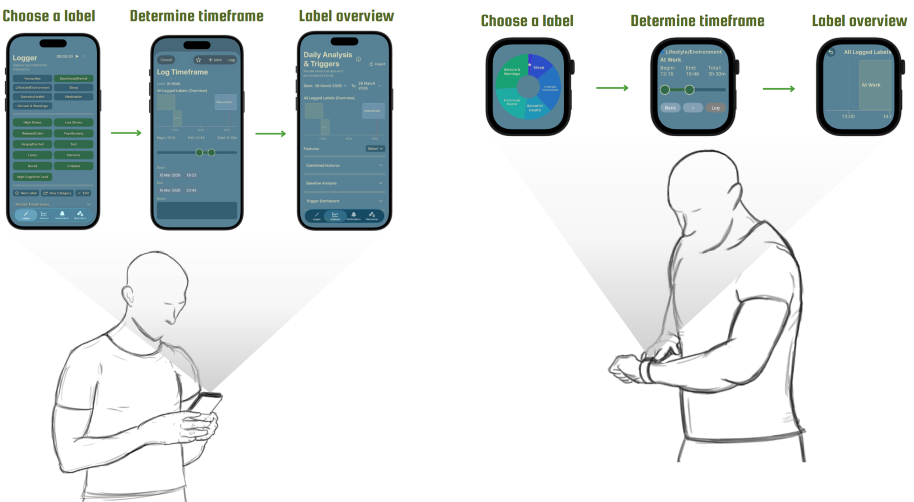
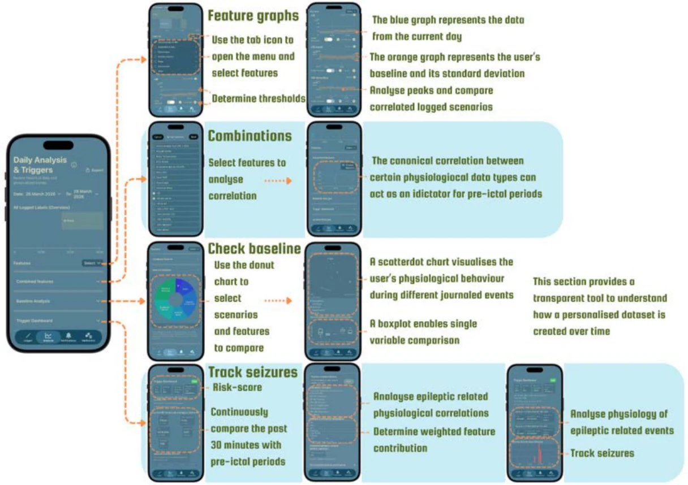
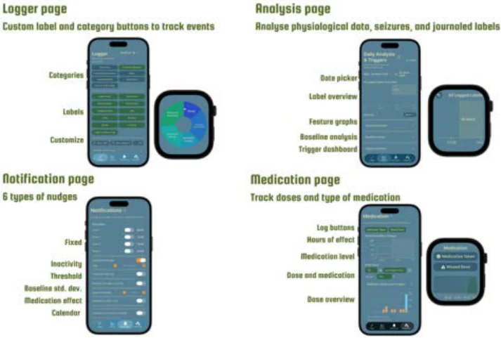

01 / Digital health
The Epilepsy Journal
A wearable-connected iOS application that brings contextual journaling, medication tracking and physiological measurements into one synchronised research dataset.

The challenge
Understanding what happens before a seizure requires more than detecting the seizure itself. Context such as stress, sleep and daily activities often remains separate from physiological measurements. My graduation project explored how to connect these sources while keeping the burden of long-term journaling manageable.

From interface to working system
I designed and developed the application in SwiftUI, integrating Apple Watch measurements through HealthKit. Timestamped journal entries and physiological data align in 30-second windows. The system includes a timeline, medication tracking, configurable reminders, analysis views and structured CSV export. Conversations with patients, clinicians, SEIN researchers and TU Delft informed both usability and clinical relevance.

Evaluation and next steps
A within-subjects study with seven participants compared three reminder strategies. No statistically significant differences were found; personalised nudges nevertheless showed promising response times and informed a hybrid strategy. The portfolio reports a year-long follow-up study planned with SEIN and EpilepsieNL from January 2027, involving more than 50 patients. The seizure-risk model is a proof of concept for research, rather than a validated clinical prediction tool.
